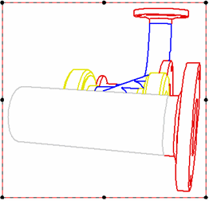

Using 3D model colors in drawing views
In the Draft environment, you can apply model colors assigned using Color Manager and Part Painter to edges shown in drawing views.

The following options are available to apply model colors to drawing views:
-
Select the Use model colors option on the Shading and Color page (Drawing View Properties dialog box). You can select Use model colors, and then choose to apply the part base color style, the assembly override color style, or both to drawing view edges.
-
Use the Edge Painter command to:
-
Show purchased parts in one color and manufactured parts in another color.
-
Assign a unique color to all newly designed parts on a drawing.
-
Apply assembly weld colors to weld bead graphics.
-
How do I
Set the Color Scheme for Solid EdgeSet the part color display
Apply an override to the base part style with Part Painter
Display Element Colors Based on Degrees of Freedom
Display draft face colors on a part
Learn more
Using colors in Solid EdgeUsing Color Manager and Part Painter
Look up more details
Color Manager commandColor Manager dialog box
Part Painter command
Part Painter command bar
Relationship Colors command
Color dialog box